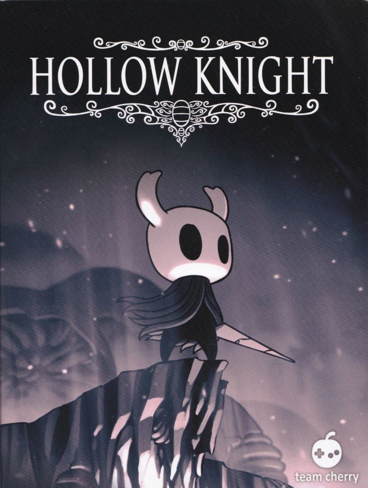
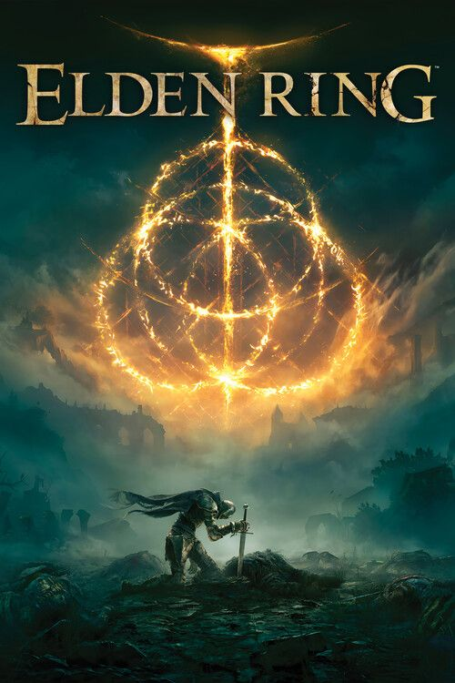
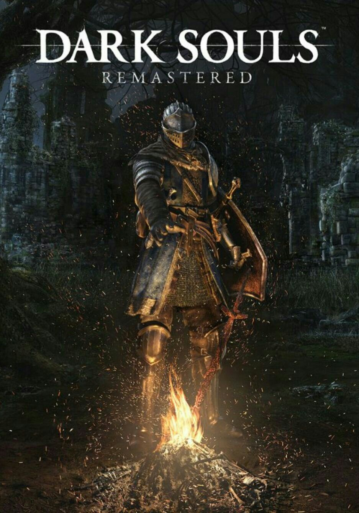
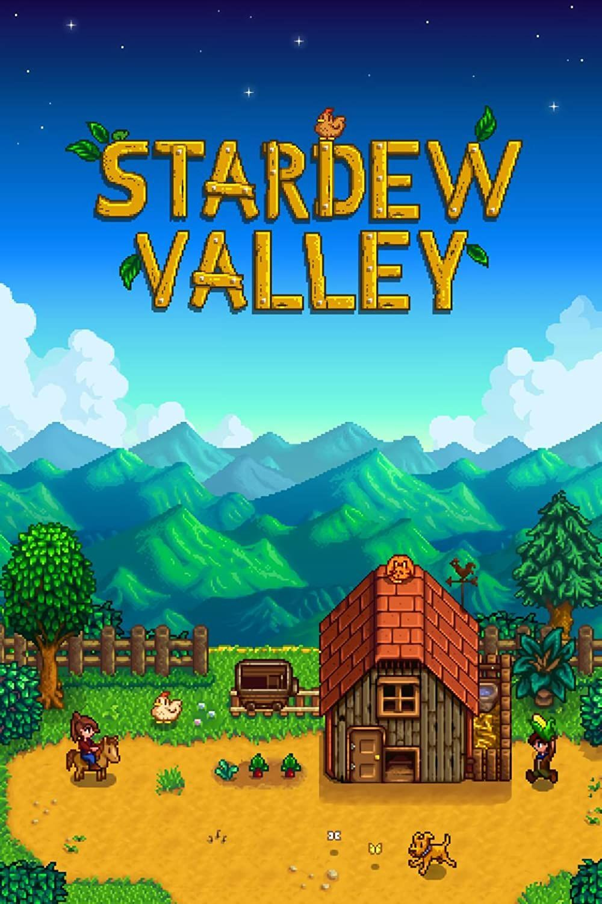

Sala Gamer
Login
×
Login
Entrar
Não tem login?
Cadastre-se
Jogos em Destaque




OSTs mais ouvidas
Hollow Knight - The Grimm Theme
Elden Ring - Main Theme
Dark Souls - Abyss Watchers
Cyberpunk 2077 - V's Theme
Comentários
Enviar
Usuário1:
Hollow Knight é jogaço, me perco de 5 em 5 min
Usuário2:
Elden Ring é lindo, jogo lindo